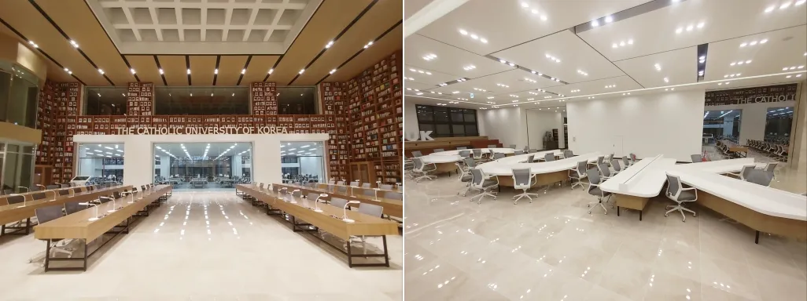

나에게 의미 있는 이유
시험기간이 되면 강의 내용을 복습하고 부족한 부분을 집중해서 공부하기 위해 자주 찾는 곳입니다. 과제의 시작이 막막할 때도 도서관에 와서 자료를 찾고 해야 할 일을 하나씩 정리하면 자연스럽게 공부에 집중하게 됩니다. 시험을 준비하며 오랜 시간 머물렀던 기억이 있고, 노력한 만큼 결과를 만들어 가는 장소라서 나에게 의미 있는 핫스팟으로 골랐습니다.
위치
성심교정의 베리타스관(L관)에 있는 중앙도서관입니다.
관찰 포인트와 추천 활동
- 서가를 천천히 둘러보며 평소 전공과 다른 분야의 책 제목을 살펴봅니다.
- 창가에서 바깥 풍경과 실내의 조용한 분위기를 비교해 봅니다.
- 다음 수업 전에 할 일 세 가지를 짧게 적어 봅니다.